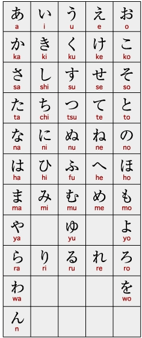
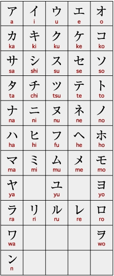

Bienvenido a tu viaje autodidacta para aprender japonés.
Sumergirse en el estudio del japonés por cuenta propia es una aventura emocionante que te permite explorar la rica cultura y lengua de Japón a tu propio ritmo. En esta página, te proporcionamos nuestras recomendaciones cuidadosamente seleccionadas de libros esenciales y recursos en línea para que puedas comenzar y avanzar en tu camino de aprendizaje. Desde gramática y vocabulario hasta práctica de lectura y escucha, estos recursos han demostrado ser valiosos aliados para aquellos que buscan aprender japonés de manera autodidacta. ¡Prepárate para descubrir nuevas palabras, caracteres y expresiones mientras te sumerges en la fascinante lengua japonesa!
¡Haz hecho feliz a Luffy!
おい、みんな！ 新しい仲間できた！

¿Si soy nuevo cómo debería empezar?
Para aquellos que se embarcan en el aprendizaje del japonés por primera vez, una sólida comprensión del hiragana y katakana es esencial. Estos dos sistemas de escritura japonesa, conocidos como silabarios, representan la base fundamental para la lectura y escritura del idioma. Dedicar tiempo al estudio detallado de estas formas de escritura desde el principio proporcionará las herramientas necesarias para abordar con confianza el idioma japonés. Existen numerosas aplicaciones y recursos en línea diseñados para facilitar el aprendizaje del hiragana y katakana de manera efectiva, lo que te preparará para avanzar con éxito en tu viaje de aprendizaje del japonés. ¡Adelante y disfruta del proceso de descubrimiento!
Hiragana
Katakana
Después de dominar con destreza los sistemas de escritura Katakana y Hiragana (puedes utilizar este archivo PDF para imprimir y perfeccionar tus habilidades), te invitamos a explorar la sección superior dedicada a libros completos. Allí, podrás seleccionar el que más se adapte a tus preferencias; personalmente, te recomendaría considerar el uso del libro "Genki".
どうやって勉強し始めようか。
Para los que ya están estudiando Japonés
Si actualmente te encuentras inmerso en tu proceso de aprendizaje, te sugeriría dirigir tu atención hacia las distintas secciones de nuestro menú, donde podrás seleccionar el recurso más adecuado para tu nivel específico.

このままで続けろ！